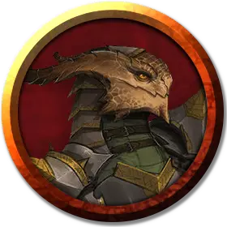

Валетта
Valetta
Средний Гуманоид (Бронзовая драконорождённая), нейтральный, именной НИП

Класс Доспеха 13 (кольчужная рубаха)
Хиты 27 (5к8 + 5)
Скорость 25 футов
| мод | спас | ||
|---|---|---|---|
| СИЛ | 10 | +0 | +0 |
| ЛОВ | 10 | +0 | +0 |
| ТЕЛ | 12 | +1 | +1 |
| мод | спас | ||
|---|---|---|---|
| ИНТ | 13 | +1 | +1 |
| МДР | 16 | +3 | +3 |
| ХАР | 13 | +1 | +1 |
Навыки Медицина +7, Религия +5, Убеждение +3
Сопротивление урону электричество
Чувства пассивное Восприятие 13
Языки Общий, Драконий
Опасность 2 (450 опыта)
Бонус мастерства +2
Особенности
Божественная слава. Валетта может бонусным действием потратить одну ячейку заклинания, чтобы её рукопашные атаки оружием магическим образом причиняли цели при попадании дополнительный урон излучением 10 (3к6). Это преимущество длится до конца текущего хода. Если Валетта потратит ячейку 2-го уровня или выше, дополнительный урон увеличивается на 1к6 за каждый уровень выше 1.
Использование заклинаний. Валетта является заклинателем 5-го уровня. Её базовой характеристикой является Мудрость (Сл спасброска от заклинания 13, +5 к попаданию атаками заклинаниями). У неё подготовлены следующие заклинания жреца:
• Заговоры (неограниченно): свет [light], священное пламя [sacred flame], чудотворство [thaumaturgy]
• 1 уровень (4 ячейки): лечение ран [cure wounds], направляющий снаряд [guiding bolt], убежище [sanctuary]
• 2 уровень (3 ячейки): божественное оружие [spiritual weapon], малое восстановление [lesser restoration]
• 3 уровень (2 ячейки): духовные стражи [spirit guardians], рассеивание магии [dispel magic]
Действия
Булава. . Рукопашная атака оружием: +2 к попаданию, досягаемость 5 футов, одна цель. Попадание: Дробящий урон 3 (1к6).
Оружие дыхания (Перезаряжается после короткого или продолжительного отдыха). Валетта выдыхает линией молнию длиной 30 футов и шириной 5 футов. Любое существо в линии должно совершить спасбросок Ловкости Сл 11, получая 7 (2к6) урона электричеством в случае провала и половину этого урона в случае успеха.